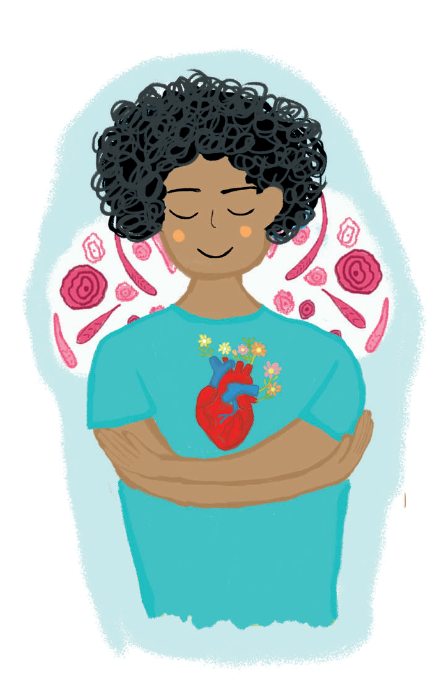

Manual de autocuido

Recuerda: existen muchas formas de autocuido y cada una depende de nuestros gustos, necesidades e intereses. Tú decides cuál es la mejor forma para ti.
Recuerda: existen muchas formas de autocuido y cada una depende de nuestros gustos, necesidades e intereses. Tú decides cuál es la mejor forma para ti.